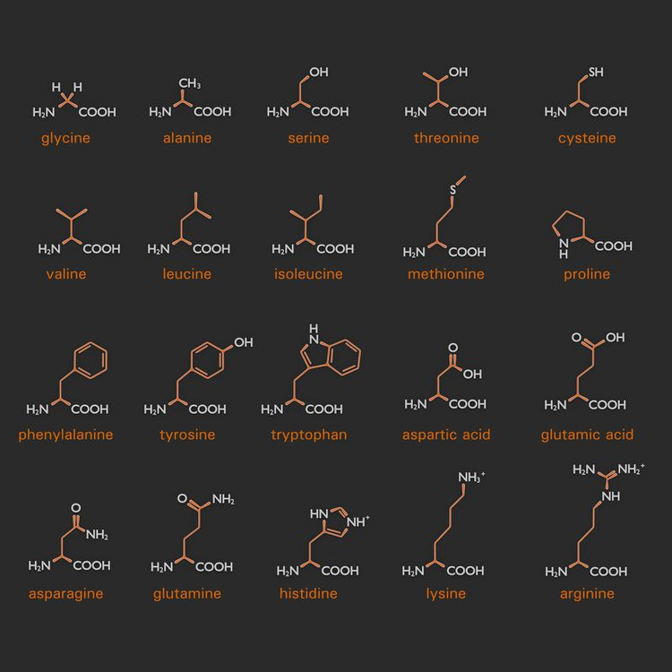
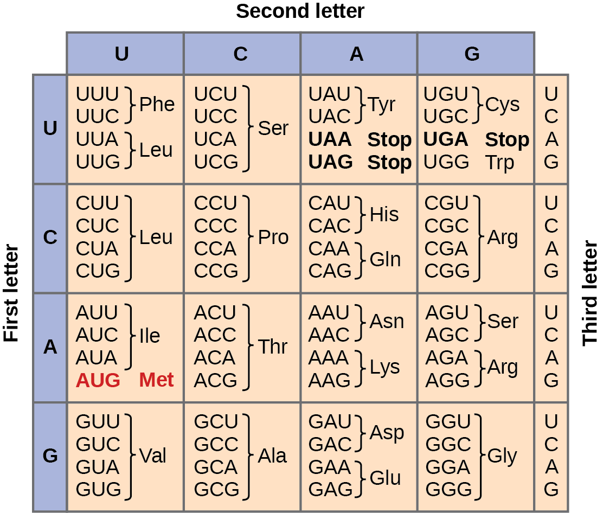

Codons
Every living thing runs on an information system linking DNA to proteins. The flow of genetic information in a cell runs one way:
\[\text{DNA} \;\xrightarrow{\ \text{transcription}\ }\; \text{RNA} \;\xrightarrow{\ \text{translation}\ }\; \text{protein}\]
This is the central dogma of molecular biology (Crick, 1958). A gene is a stretch of DNA written in a four-letter alphabet of bases: A, C, G and T.
Transcription copies that stretch into messenger RNA, the same message with the base U standing in for T.
Translation then reads the RNA message and assembles a protein from it, one amino acid at a time.
Amino acids and the genetic code
Proteins are chains built from amino acids: small molecules with a common backbone and one of 20 different side chains.

The side chains range from tiny (glycine) to bulky and ring-shaped (tryptophan), and their chemistry sorts the 20 amino acids into a few standard categories:
- nonpolar (hydrophobic): glycine, alanine, valine, leucine, isoleucine, proline, methionine, phenylalanine, tryptophan
- polar, uncharged: serine, threonine, cysteine, tyrosine, asparagine, glutamine
- positively charged: lysine, arginine, histidine
- negatively charged: aspartate, glutamate
The sequence of amino acids determines how the chain folds, and the fold determines what the protein does.
You may also see the count 22: two rare extras, selenocysteine and pyrrolysine, are installed by recoding a stop codon rather than by codons of their own, so they sit outside the standard table below. Pyrrolysine occurs only in some archaea and bacteria.
Now the code itself. RNA has four letters: A, C, G and U. Translation reads them three at a time, and each three-letter sequence is a codon. There are \(4^3 = 64\) possible codons, and each one corresponds to an amino acid or to a stop signal: 61 of them spell the 20 amino acids (so most amino acids have several spellings), three mean “stop”, and AUG doubles as the “start” that begins every protein.
Design question. That is the entire dataset: 64 three-letter sequences, each mapped to one of 21 meanings, and every amino acid belonging to one of the chemical categories above. Before reading further, sketch how you would visualise this mapping. What does position encode? Where does colour go? How does a reader look up a codon quickly, and how do they see the categories?
The standard answer that biologists converged on is the codon chart. Find one in the wild (they appear everywhere genetics is taught), study how its layout answers the questions above, and then build your own version of it, with the amino acids coloured by category.

The three-letter labels (Phe, Leu, Ser, …) are the standard shorthand for the 20 amino acids. And notice, once you can read the chart, that the spellings of one amino acid are not scattered at random: they usually differ only in the third base, so a mutation there often changes nothing at all. A good design makes that pattern easy to see.
Sources
- The codon chart is from OpenStax, Biology 2e (Rice University), licensed CC BY 4.0, available at openstax.org.
- Crick, F. H. C. (1958) On protein synthesis, Symposia of the Society for Experimental Biology 12, 138-163, the original statement of the central dogma.